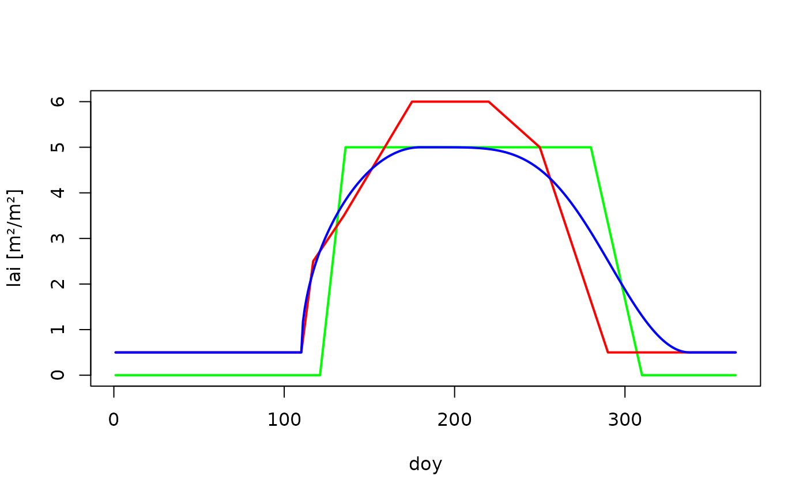
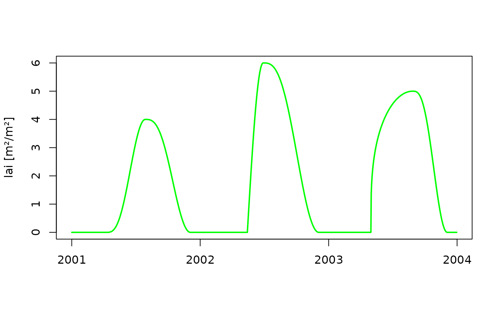

R/MakeSeasLAI.R
make_seasLAI.RdA daily sequence of leaf area index is derived from maximum and minimum values, dates and shape parameters using different methods.
Name of method for generating the sequence. Must be one of "b90", "linear", "Coupmodel".
Vector of years to be returned.
Maximum leaf are index.
Fraction of maxlai during winter (ignored when
method = 'linear').
Budburst day of year (ignored when method =
'linear').
Day of year when leaf fall begins (ignored when
method = 'linear').
Number of days from budburst until maximum leaf area index is reached.
Number of days until minimum leaf are index is reached.
Day of year when optimum value is reached (required when
method = "Coupmodel").
Shape parameter for the growth phase (required when
method = "Coupmodel").
Shape parameter growth cessation (required when
method = "Coupmodel").
Integer vector of days of years.
Vector of values of fractional leaf area index corresponding
to lai_doy (required when method = "linear").
A vector of daily lai values covering the years specified.
# Intraannual courses of leaf area index
lai_b90 <- make_seasLAI(method = "b90",
year = 2001,
maxlai = 5,
winlaifrac = 0,
budburst_doy = 121,
leaffall_doy = 280,
emerge_dur = 15,
leaffall_dur = 30)
lai_doy <- c(1,110,117,135,175,220,250,290,365)
lai_frac <- c(0.1,0.1,0.5,0.7,1.2,1.2,1.0,0.1,0.1)
lai_linear <- make_seasLAI(method = "linear",
year = 2001,
maxlai = 5,
lai_doy = lai_doy,
lai_frac = lai_frac)
lai_coupmodel <- make_seasLAI(method = "Coupmodel",
year = 2001,
maxlai = 5,
winlaifrac = 0.1,
budburst_doy = 110,
leaffall_doy = 280,
shp_optdoy = 180,
shp_budburst = 0.5,
shp_leaffall = 5)
plot(lai_b90, type = "n", xlab = "doy", ylab = "lai [m²/m²]", ylim = c(0,6))
lines(lai_b90, col ="green",lwd = 2,)
lines(lai_linear, col ="red",lwd = 2)
lines(lai_coupmodel, col ="blue",lwd = 2)

# incorparating between-year variability
years <- 2001:2003
lai <- make_seasLAI(method = "Coupmodel",
year = years,
maxlai = c(4,6,5),
budburst_doy = c(100,135,121),
leaffall_doy = 280,
shp_budburst = c(3,1,0.3),
shp_leaffall = 3,
shp_optdoy =c(210,180,240) )
dates <- seq.Date(as.Date("2001-01-01"), as.Date("2003-12-31"), by = "day")
plot(dates,lai, col = "green", ylab = "lai [m²/m²]",
type ="l", xlab = "", lwd = 2)
